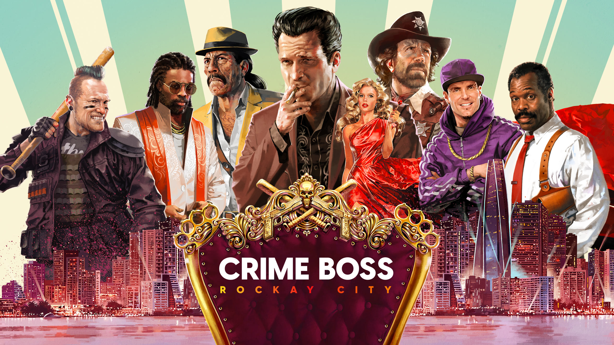

Unreal Engine 4
Crime Boss: Rockay City
Game from Ingame Studios, released by 505 Games. I am currently working on this project as UI Programmer.
Unreal Engine 4
Crime Boss: Rockay City
Game from Ingame Studios, released by 505 Games. I am currently working on this project as UI Programmer.
Used Technologies: Unreal Engine 4, C++, Bluperints
My responsibilites: UI programming
I began my journey at Ingame Studios as an intern, which was a requirement for my university program. Right from the start, I had my sights set on working as a UI programmer or in a similar role. Although I first worked as a technical QA, after a few months, I received more responsibilities as a UI Programmer.
I have spent almost two and a half years working on the UI of Crime Boss: Rockay City, in collaboration with a team of other programmers and UI/UX designers. During this period, I have worked on almost all parts of the game's UI. I found the most enjoyable features to be the ones that allowed me to solve problems with my own ideas, rather than having to strictly follow prepared designs or mockups.
As mentioned earlier, UI/UX designers provide the mockups for widgets and screens. However, sometimes a problem arises that requires a simple and efficient solution. One problem of this kind and the solution I came up with is described in more detail in the following text.
One of the major UI/UX flaws in the console release of the game was the mission selection process on the city map. Players who solely relied on game controllers had only one confusing way to navigate through the mission icons on the map and choose them.
The navigation involved scrolling through icons sequentially with no option to skip or know the fastest route to the desired icon.
Several different approaches were carefully tested and refined through trial and error, with feedback from colleagues helping to guide the process.
The most promising one was a custom virtual cursor that would snap to the closest mission icon and soft-select it. It was essential to fine-tune the snapping behavior since an incorrectly functioning cursor could do more harm than good.
Some of the key settings that had the most impact were the sizes of the icon colliders and the proximity around the cursor that is used to collect nearby icons.
In addition, factors such as the speeds and timing of different stages of the snapping process, as well as the conditions under which snapping can occur, were important.
The final solution to the problem that made it into the game in one of the updates is the virtual cursor. The cursor is controlled by the left stick and has finely tuned speed, size, collider and other settings to provide the best possible experience to the players. Alternatively, players can use a directional icon selection controlled by the d-pad which provides less accurate but faster way of navigating the missions.